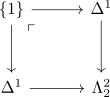

homotopy category of a horn
Proposition
Let $\Lambda_j^n$ be the j-horn. Then the homotopy category is given by
\begin{align*}
h \Lambda_j^n =&
\begin{cases}
[n] & \mbox{if } n \geq 3 \\
[2] & \mbox{if } n = 2, i = 1 \\
* & \mbox{if } n = 2 \\
\end{cases}
\end{align*}
and
\begin{displaymath}
\begin{tikzcd}
& * &
* \arrow[]{ru}{} \arrow[]{rr}{}& *
\end{tikzcd}
\end{displaymath}for $\Lambda_0^2$
resp
\begin{displaymath}
\begin{tikzcd}
& * \arrow[]{rd}{} &
* \arrow[]{rr}{}& *
\end{tikzcd}
\end{displaymath}for $\Lambda_2^2$
Proof
$n \geq 3$
- isomorphism on 2 skeleton and isomorphism on homotopy category
- homotopy category of a nerve canonically isomorphic
$n = 1$
- follows from homotopy category functor as left adjoint and
\begin{align*}
\Lambda_0^1 =& \Delta^1
\end{align*}
$n = 2$
follows similarly from realizing the horn as pushout, e.g. $\Lambda_2^2$ as
